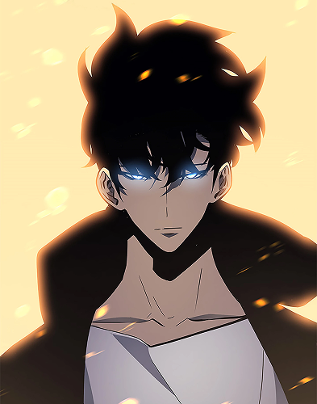
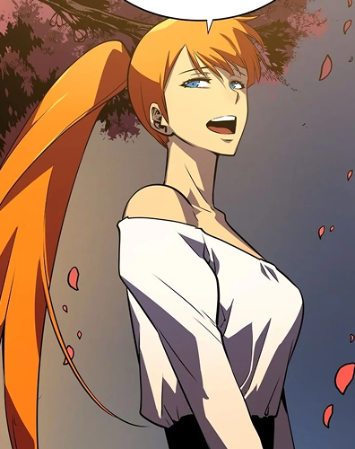
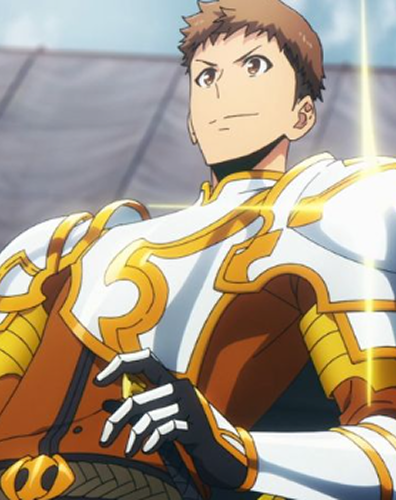
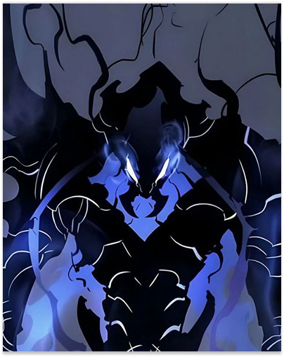

<main>
    <section>
        <div class="about-book">
            <h1>Solo Leveling</h1>
            <div class="book-content-wrapper">
                
                <div class="book-details">
                    <p><strong>Autor:</strong> Chu Gong</p>
                    <p><strong>Gênero:</strong> Fantasia, Ação, Aventura, RPG</p>
                    <p><strong>Resumo:</strong> Sung Jin-Woo é um caçador de nível extremamente baixo em um mundo onde portais conectam a Terra a masmorras cheias de monstros. Após um evento misterioso em uma masmorra dupla, ele adquire habilidades únicas que lhe permitem crescer em poder de forma exponencial. A história acompanha sua jornada de um caçador fraco e desprezado a um dos mais poderosos do mundo, enfrentando desafios cada vez maiores e desvendando segredos sombrios por trás dos portais.</p>
                </div>
            </div>
        </div>

        <article>
        <h2 class="subtitle">Resenha</h2>
        <p class="text">Solo Leveling é uma obra que se destaca no cenário dos manhwas sul-coreanos, não apenas pelo seu conceito de RPG em um mundo de Caçadores e portais ("Dungeons"), mas pelo seu visual estonteante. Diferente dos mangás tradicionais, o manhwa é totalmente colorido, com um traço belíssimo e cores intensas que tornam cada quadro uma experiência visual única.</p>
        <p class="text"> A trama segue Sung Jin-Woo, o caçador mais fraco de Rank E, cuja vida muda após um encontro de quase morte em uma "Dungeon Dupla". Ao aceitar o misterioso "Sistema" e se tornar um "Jogador", ele ganha a habilidade de subir de nível e se fortalecer ilimitadamente. A narrativa é viciante, com um ritmo excelente e cliffhangers envolventes que tornam impossível parar de ler.</p>
        <p class="text">Embora o enredo siga a fórmula de um protagonista que se torna invencível rapidamente, a leitura é compensada por batalhas dinâmicas e eletrizantes. A motivação de Jin-Woo, movida pelo desejo de sustentar e proteger sua família, adiciona a profundidade emocional necessária para cativar o leitor.</p>
        <p class="text">Contudo, a obra não é perfeita. O potencial conflito interno de Jin-Woo sobre a perda de sua humanidade é abandonado, e as personagens femininas, apesar de poderosas, carecem de influência na trama principal. Mesmo com essas falhas e um epílogo menos inspirado, Solo Leveling é uma leitura empolgante, viciante e altamente recomendada para quem busca ação e aventura no melhor estilo level up.</p>
        </article>

        <h2 class="subtitle">Personagens</h2>

        <section class="card-section resenha-cards">

            <div class="flip-card">
                    <div class="flip-card-front">
                        
                        <h3>Sung</h3>
                    </div>
            </div>

            <div class="flip-card">
                    <div class="flip-card-front">
                        
                        <h3>Joohee</h3>
                    </div>
            </div>

            <div class="flip-card">
                    <div class="flip-card-front">
                        
                        <h3>Jinho</h3>
                    </div>
            </div>

            <div class="flip-card">
                    <div class="flip-card-front">
                        
                        <h3>Beru</h3>
                    </div>
            </div>

        </section>

    </section>


</main>